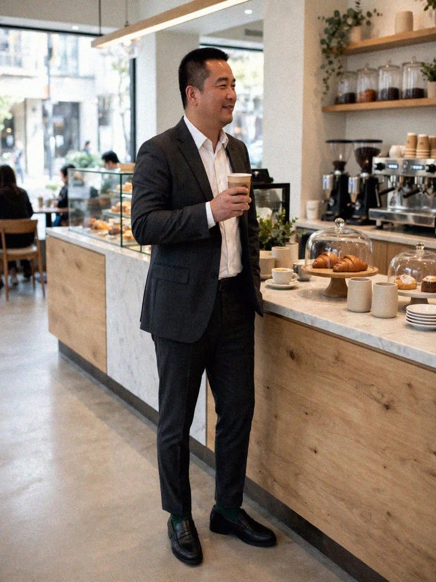
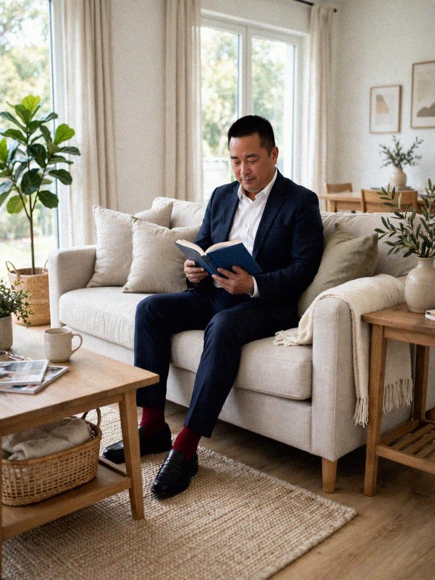
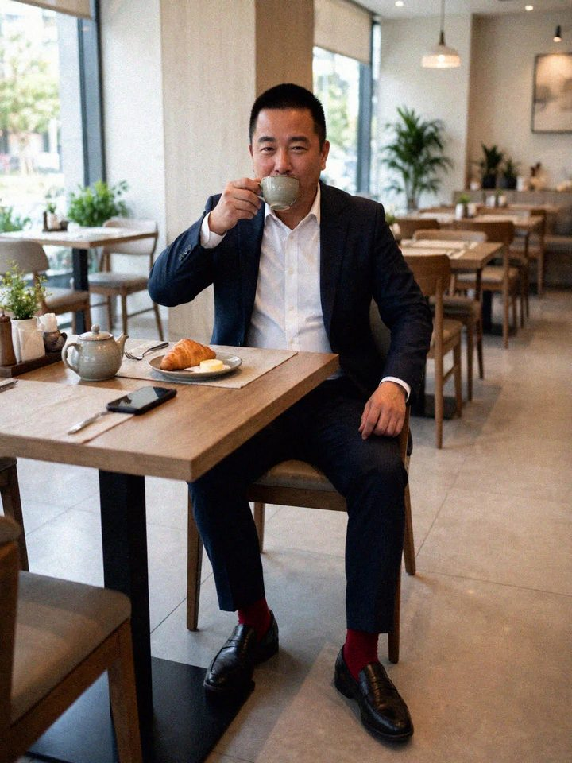
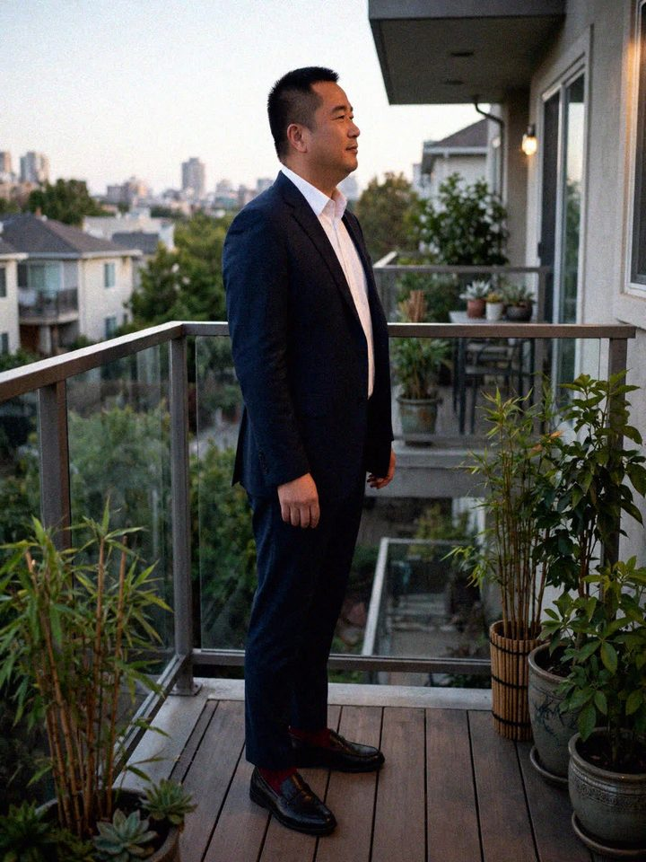

视频号作品
杨树598 在视频号的图文，助理接手后发表的 3 篇全部在这里：书店、咖啡馆、傍晚回家。点图放大，左右滑动切换；每篇封面有“订这篇同款”。
单品
系列
搜索
这个分类下暂时没有作品图，换个分类看看。
视频号 · v2 · 2026-10-27
你的叔｜这身深灰，下午在书店坐下来刚刚好
书店窗边，深灰西装配纯黑袜，乐福鞋不系带，坐下来看书，裤脚刚好露一截袜子，不抢戏刚刚好。
视频号 · v3 · 2026-10-27
你的叔｜周末咖啡馆，墨绿袜刚刚好
咖啡馆窗边看报，公园长椅上坐一会儿，深灰西装配纯墨绿袜，乐福鞋不系带，坐下来裤脚刚好露一截袜子，不抢戏刚刚好。


视频号 · v4 · 2026-10-28
你的叔｜傍晚回家，酒红袜刚刚好
傍晚回家，玄关脱下外套，客厅坐下来看会儿书，藏青西装配纯酒红袜，乐福鞋不系带，坐下来裤脚刚好露一截袜子，不抢戏刚刚好。


